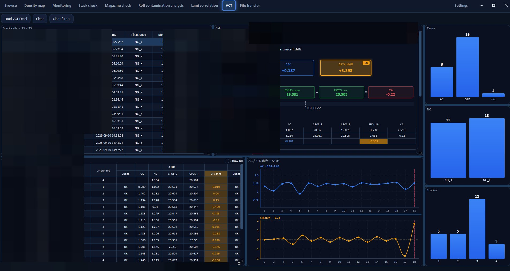

VCT — stack, equipment and searching IDs redacted. Charts keep the diagnostic logic visible.
Dimensional diagnostics (VCT)
Not every NG is a visual defect. This view decomposes alignment into measured terms (AC, previous/current CPOS, stacker shift) and a result (CA) against a spec limit. The formula is shown on screen so a judgement is auditable.
Pareto-style bars split cause codes; line charts show whether a shift is a step change or noise. That is standard process-control thinking: separate special cause from common cause before changing the machine.